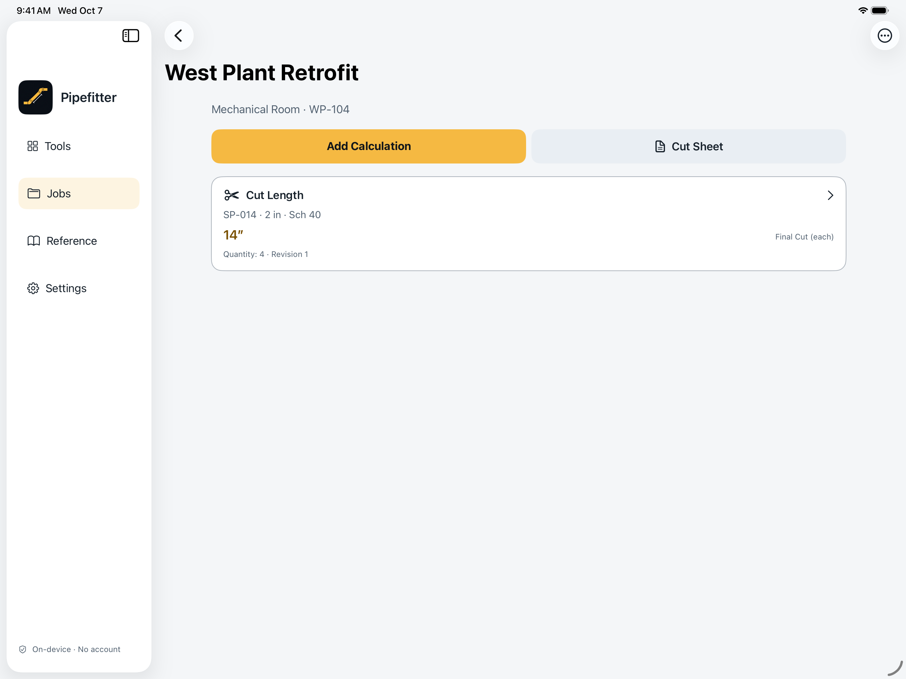

JOBS & SAVED RECORDS
Keep the job.
Keep the context.
Group your work by job name, number, and area. Give each record the spool ID, pipe label, quantity, and notes that make it useful later.
- Saved inputs, results, formulas, source, and display settings
- Edit a calculation as a new revision; keep its history
- Duplicate records for similar work, or delete what you no longer need
Free: 1 current job and 5 current records across the library. Deleting a record frees a slot; revisions do not use extra slots. Pro removes these limits.

Your measurements, with the details that give them meaning.